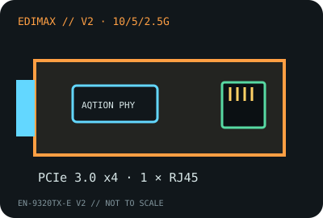

[ MODEL-SPECIFIC NETWORK HARDWARE RECORD ]
Edimax EN-9320TX-E V2 10 Gigabit Ethernet Adapter
Revision V2 is a single-port, NBASE-T-capable PCIe copper adapter. Do not transfer the V2 speed table or driver notes to the earlier EN-9320TX-E board.

IDENTIFICATION: Exact product model EN-9320TX-E V2. The Edimax version-specific datasheet is the reference for this revision; verify the model suffix on the card itself.
Exact SKU, interface and compatibility
| Exact model / SKU / revision | Edimax EN-9320TX-E V2 (10 Gigabit Ethernet PCI Express Server Adapter). |
|---|---|
| Controller | Marvell/Aquantia AQtion multigigabit Ethernet controller family; the Edimax V2 datasheet identifies the adapter capabilities but does not specify a controller stepping. Do not assign AQC107 versus AQC113 solely from a similar retail card. |
| Bus, ports and connector | PCI Express 3.0 x4; one 8P8C/RJ-45 copper port; standard and low-profile bracket support as described in the V2 documentation. |
| Per-port link rates | 10GBASE-T, 5GBASE-T, 2.5GBASE-T, 1000BASE-T and 100BASE-TX, with auto-negotiation. |
| Driver and operating systems | Use the Edimax V2 driver package. Its archived matrix lists Windows 7/8.1/10, Windows Server 2008 R2/2012/2012 R2/2016, Linux 2.6/3.x/4.x, macOS 10.12, and ESXi 5.1/5.5/6.0 (plus Hyper-V/KVM); these are historical entries, not current-release certification. |
| Cabling and compatibility caveats | Use Cat 6a/7 channel for 10GbE and the vendor-specified cable/length for lower NBASE-T rates. Requires four electrically connected PCIe lanes; the port’s negotiated speed is bounded by switch, cabling and far-end NIC. |
| Revision warning | V2 suffix is required for this record. Earlier EN-9320TX-E revisions and other Edimax 10GbE cards may use different silicon, drivers, bracket packages or speed support. |
Use and preservation notes
Keep the V2 sticker, MAC address, PCB revision, controller marking and driver package together in the record. No throughput benchmark is claimed; measured data must name the negotiated speed, peer, cable, OS, driver, MTU and test method.
Edimax datasheet and product documentation
- Edimax EN-9320TX-E V2 datasheet (PDF)Revision-specific manufacturer technical specifications.
- Edimax EN-9320TX-E Quick Installation Guide (PDF)Manufacturer card installation and driver guide; verify the V2 label because this bundled guide also names the earlier family member.
- Edimax EN-9320TX-E V2 product pageManufacturer product family, downloads and version identity.
- Marvell FastLinQ Edge controller family brief (PDF)Controller-family context only; it does not identify the exact silicon revision on every EN-9320TX-E V2 card.